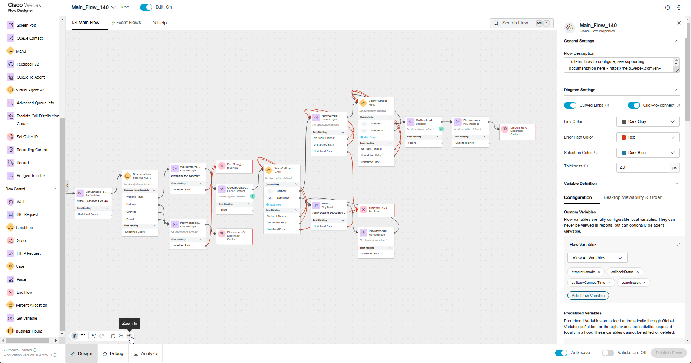

Mission 4: Preventing Callback duplication
Note
This task relies on completing Mission 3 of Fundamental Labs. Ensure that mission is completed to have a fully functional callback feature in your flow.
Story
If a caller who already has a scheduled callback contacts the contact center again to request another callback, our system can recognize this. It will then notify the caller that a callback is already scheduled and will be completed as soon as the next agent becomes available.
Call Flow Overview
- A new call from a caller, who already has a scheduled callback, enters the flow.
- The flow executes the logic configured in previous missions.
- The call is routed to the appropriate queue, but no agents are available.
- Since no agents are available, a callback option is offered to the caller.
- Once the caller requests for a callback, IVR replies that calback has been scheduled already.
Mission Details
Your mission is to:
- Enhance the functionality of the Main_Flow_Your_Attendee_ID by introducing an advanced feature to check if a callback already exists for a specific tested number.
- Use Search API request to fetch the data from Analyzer database. For more details see Search API for details.
Build
-
Switch to the Flow Designer. Open your flow Main_Flow_Your_Attendee_ID and make sure Edit toggle is ON.
-
On the right-hand side, in the Global Flow Properties panel, scroll down to locate the Flow Variables section under Custom Variables. Click the Add Flow Variable button and add the following 3 flow variables:
- Callback Status variable:
Name: callbackStatus
Type: String
Default Value: empty
- Callback Connect Time variable:
Name: callbackConnectTime
Type: String
Default Value: empty
- Search Result variable:
Name: searchresult
Type: String
Default Value: empty
-
Add an HTTP Request node for our query as shown in the following video.
Remove the existing connection between VerifyNumber Option 1 and Callback node
Connect VerifyNumber Option 1 to this HTTP node
We will connect this HTTP Request node in next step
Activity Label: HTTPRequest_CallBackSearch
Select Use Authenticated Endpoint
Connector: WxCC_API
Path: /search
Method: POST
Content Type: Application/JSON
Copy this GraphQL query into the request body:
{"query":"query($from: Long!, $to: Long!)\n{\n taskDetails(\n from: $from\n to: $to\n filter: {\n and: [\n { callbackData: { equals: { callbackNumber: \"{{NewNumber.DigitsEntered}}\" } } }\n { lastEntryPoint: { id: { equals: \"{{NewPhoneContact.EntryPointId}}\" } } }\n ]\n }\n ) {\n tasks {\n callbackData {\n callbackRequestTime\n callbackConnectTime\n callbackNumber\n callbackStatus\n callbackOrigin\n callbackType\n }\n lastEntryPoint {\n id\n name\n }\n }\n }\n}","variables":{"from":"{{now() | epoch(inMillis=true) - 15000000}}","to":"{{now() | epoch(inMillis=true)}}"}}Expanded Query For Understanding (optional)
query($from: Long!, $to: Long!) { taskDetails( from: $from to: $to filter: { and: [ { callbackData: { equals: { callbackNumber: "{{NewNumber.DigitsEntered}}" } } } { lastEntryPoint: { id: { equals: "{{NewPhoneContact.EntryPointId}}" } } } ] } ) { tasks { callbackData { callbackRequestTime callbackConnectTime callbackNumber callbackStatus callbackOrigin callbackType } lastEntryPoint { id name } } } }Parse Settings:
- Content Type: JSON
- Output Variable:
callbackStatus - Path Expression:
$.data.taskDetails.tasks[0].callbackData.callbackStatus
Click Add New
-
Output Variable:
callbackConnectTime -
Path Expression:
$.data.taskDetails.tasks[0].callbackData.callbackConnectTime

-
Add Set Veriable node
Connect HTTPRequest_CallBackSearch to this node
We will connct Set Variable node in next step
Variable: searchresult
Set To Variable: HTTPRequest_CallBackSearch.httpResponseBody
-
Add a Condition node
Connect Set Variable created in previous step to this node
Connect False exit path to existing CallBack node
We will connect True exit path in next step
Expression:
{{ callbackConnectTime == "-1" ? (callbackStatus == "Not Processed" ? (HTTPRequest_CallBackSearch.httpStatusCode == 200 ? "true" : "false") : "false") : "false" }}Note
Above expression uses nested ternary logic to combine the checks. This evaluates the first condition and then evaluates the second condition if the first is true and so on. In our case the expression returns True only when httpStatusCode equals 200, callbackStatus is Not Processed and callbackConnectTime is -1
-
Add Play Message and Disconnect Contact nodes:
Enable Text-To-Speech
Select the Connector: Cisco Cloud Text-to-Speech
Click the Add Text-to-Speech Message button and paste text: The callback for provided number has been scheduled already. Please await for a callback once next agent becomes available. Thank you for your patience.
Delete the Selection for Audio File
Connect True exit path of Condition node created in previous step to Play Message node Connect this Play Message to Disconnect Contact node
-
Validate the flow by clicking Validate, Publish and select the Latest version of the flow.
{kind=link}
{kind=link}
{kind=link}
{kind=link}
{kind=link}
Testing
- Make sure your Agent either Logged Out or in Not Available state. In this case call will not be assigned to an agent and callback will be proposed to a caller.
- Make sure your Main_Flow_Your_Attendee_ID is assigned to Your_Attendee_ID_Channel. If not, do that (refer to previous very first Mission where this step was explained in details).
- Make a call to your Support Number and if success you should hear configured messages and ask to provide a new number for a callback. Because in current lab we are having number limitations we are going to provide a wellknown Cisco Worldwide Support contact number 1 408 526 7209
- While keeping your agent Not Available, make another test call to your flow and request for a callback to the same number 1 408 526 7209.
- You should hear a message configured in Step 6 of the current mission.
- Click on Analyze to visualy observe the call flow. Make sure you're viewing latest Published Version.
- Review the flow and click on HTTPRequest_CallBackSearch where you can cross-launch debuger to that particalar call.
- Navigate to HTTPRequest_CallBackSearch to see Modified Variables at the bottom of right hand side of the debuger.
- Click on Set Variable, which is the next step after HTTPRequest_CallBackSearch, to see full Search API response which we wrote to searchresult flow variable on the Step 6 of the cusrrent mission configuration.

Congratulations on completing another mission.